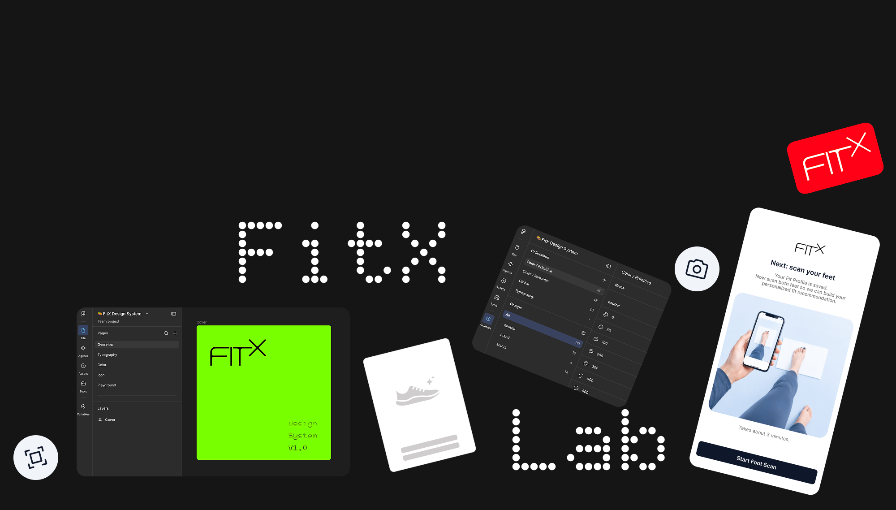

FitX Lab Fit Intelligence 0->1
Building a footwear system that learns from every user — connecting 3D scanning, fit intelligence, and personalization across mobile, web, and physical touchpoints.

1" />Building a footwear system that learns from every user
FitX is a U.S.-based technology company reimagining footwear as an intelligent product system — one that learns from each person over time.
Each pair begins with the user's 3D foot geometry, movement, and fit preferences. As the shoes are worn, feedback on comfort, performance, and fit flows back into the system, helping future pairs become more personalized and accurate. Rather than improving only the product itself, FitX is building a continuous learning loop between human experience and product design.
As the Founding Product Designer, I lead the end-to-end design of this experience across digital, brand, and physical touchpoints.
Designing a learning system that improves with every interaction
I designed the core journey as a continuous learning loop—from 3D foot scanning and ordering to wear feedback and reordering. Each stage captures new signals about the user's feet, preferences, and real-world experience, helping the system refine future fit recommendations over time.
My work spans the mobile and web product, scan guidance and recovery states, structured feedback models, and the touchpoints that keep the learning loop active after purchase—including packaging and an NFC-enabled unboxing experience that brings users back into the product after delivery.
Improving scan completion, retention, and usable fit data
Early pilot testing achieved approximately 90% first-time scan completion and 90% participant retention across follow-up sessions.
Through iterative testing, I refined scan guidance and fit-feedback interactions, increasing usable scan and fit data by 18% and creating a stronger foundation for more accurate future recommendations.
Building a scalable design system across mobile and web
I built FitX's design system across mobile and web, including variables, tokens, responsive patterns, reusable components, interaction states, and usage guidelines. The system was designed not only to maintain consistency, but also to help a small team move quickly as the product continues to evolve.
Design systems are an area I'm especially interested in. I actively explore how they should be built and maintained across different product types, company stages, team sizes, and levels of maturity. I'm also interested in how design systems can integrate with AI-assisted workflows — helping teams generate and evaluate work faster while preserving product logic, accessibility, consistency, and implementation quality.
I regularly exchange ideas with other designers about system architecture, governance, adoption, and the evolving relationship between design systems, engineering, and AI.
Building a team where design is genuinely valued
I also care a lot about working with strong product thinkers and being part of a team where design is genuinely valued. I've actively helped build design culture through shared standards, systems, and cross-functional ways of working, helping shape that culture from the ground up has been one of the most meaningful parts of this project.
Sharing more about the work
Please reach out — I'd be happy to share more about my process and anything I'm able to share. ^ ^